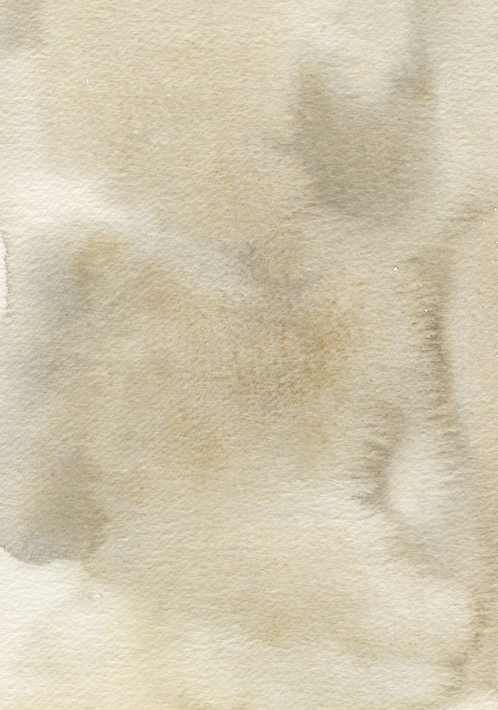

Por cada vez que volviste a tu rincón, por cada vela encendida y por cada página de tu libreta. Este recorrido fue tuyo, y lo hiciste de adentro hacia afuera.
Al despertar, antes de mirar el celular, agradece por estar aquí.
Antes de dormir, con los ojos cerrados, agradece por tu día.
Unos minutos bastan.
Gracias,
Tu mensaje llegó. Gracias por contármelo.
Puedes volver a cualquier sesión cuando lo necesites.